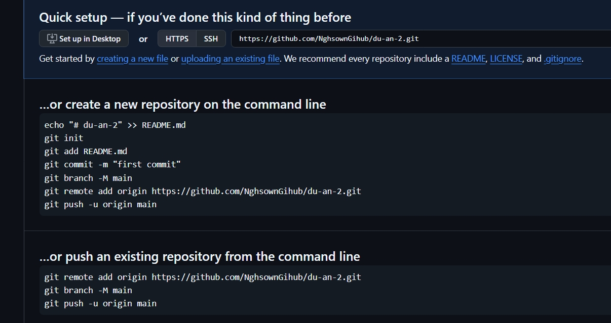

Sown: Tự học lập trình
Đường link FB:Link FB NHS
I, một số mẹo lập trình
1,mẹo dùng chuột
-
giữ "Alt" và click con trỏ chuột tại các dòng cần để tạo
thêm "dấu dạch chuột" cho các dòng cần chỉnh sửa để cùng
lúc chỉnh sửa nhiều dòng code
-
đồng thời cx có thể giữ "Alt" và bôi đen các nội dung
cần thiết ở nhiều dòng code khác nhau cùng 1 lúc
-
bôi đen nội dung cần thêm thẻ sau đó nhấn "Alt + W" để
thêm thẻ nhanh chóng cho nội dung
2, mẹo dùng thẻ
II, các loại thẻ cần lưu ý
-
thẻ < br >: break dùng để xuống dòng (thường dùng để xuống dòng
cho thơ trg cùng 1 đoạn)
vd: xuống dòng trg đoạn < p >
-
thẻ < hr >: horizontal rule dùng để kẻ một
"đường ngang" ngăn cách trên trang
-
thẻ < img >: image - hình ành dùng để chèn hình ảnh vào trang
web
-
- thuộc tính width và height dùng để căn chỉnh cao
rộng của hình ảnh
- chỉ set cao hoặc rộng, ảnh sẽ tự căn tỷ lệ
-
set % cho width sẽ giúp ảnh căn theo % ảnh ban đầu
vd: width: "50%"
III, Học về cách sử dụng Github
-
Terminal
-
các dòng code cần thiết cho Terminal:

-
Các bước đầu khởi tạo bằng Terminal và đẩy code lên kho trên git:
- "git init" để bắt đầu khởi tạo
-
- "git add ." để thêm toàn bộ folder vào phần tracker của
Terminal
- hoặc "git add ten_thu_muc/" để add thư lục lẻ, riêng
biệt
-
"git status" để kiểm tra lại trạng thái cho thư mục đã
hoặc chx đc track
-
"git commit -m "first commit"" để commit, code đẩy vào
local repo và chờ push lên github
-
"git branch -M main" để đổi chủ ngữ từ
master thành main
-
"git remote add origin
https://github.com/ten_tai_khoan_gihub/ten_thu_muc/.git"
để remote đến máy chủ git
-
"git push -u origin main" để push code lên máy chủ git
* sau đó lên trang chủ git nhấn F5 để ktra việc code đã đc đẩy
lên hay chx
IV, Bài tập ôn luyện
1, bài tập 1
- học về các thẻ head
- thực hành sử dụng các thẻ head sao cho hiển thị đúng ý trên web
2, bài tập 2
-
ôn tập chèn ảnh:

Return on Top